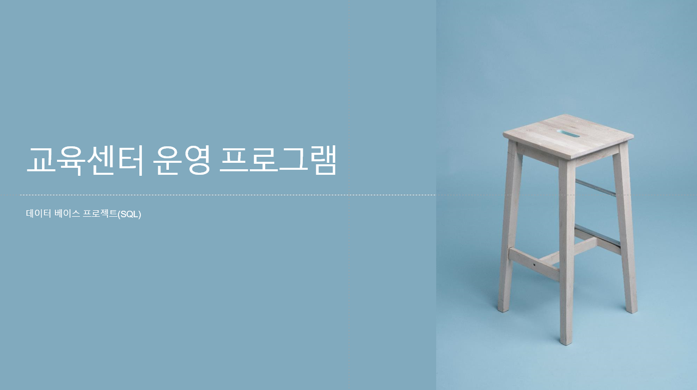
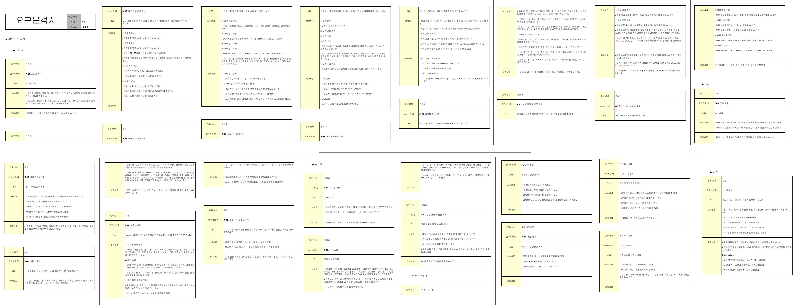
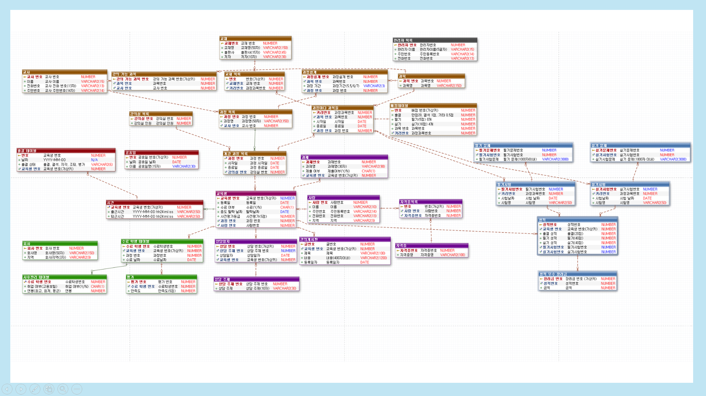

교육센터 운영 프로그램
교육센터 운영 프로그램
[DBMS Oracle Project]
주어진 요구사항을 충족시키는 구현 프로젝트
주어진 요구사항을 충족시키는 구현 프로젝트
1. 요구분석서

요구분석서
요구분석서를 통해 기능적 요구사항을 상세하게 서술합니다.2. ERD

ERD
주어진 요구사항을 충족하기 위한 ERD입니다.
3. 주요 기능
4. 느낀 점
- 이번 프로젝트 진행하면서 RDBMS에 대한 이해와 자신감이 생기게 되었습니다.
- 하나의 Procedure에 여러 개의 Trigger와 Procedure을 작동하도록 만들어 차곡차곡 설정한 PL/SQL들이 발생하는 것을 보며 재미와 뿌듯함을 느꼈습니다.